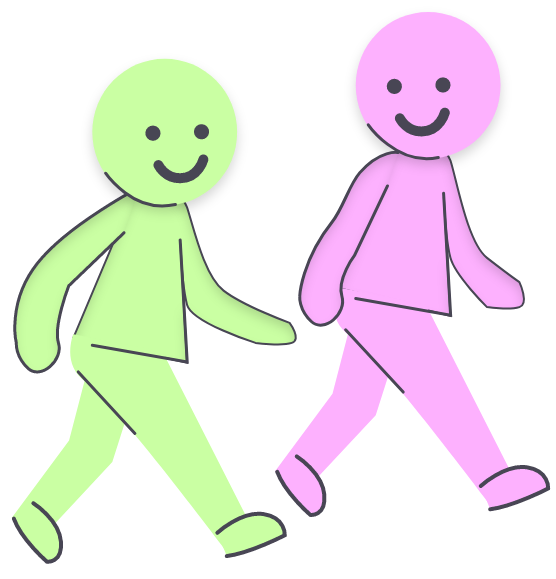

Walking Meditation
Find a quiet place 2 to 5 metres long, begin to walk slowly with your connection. Focus on the experience of walking, being aware of the sensation of standing and keeping your balance. When you reach the end of your path, return to where you were, maintain awareness of your sensations.
